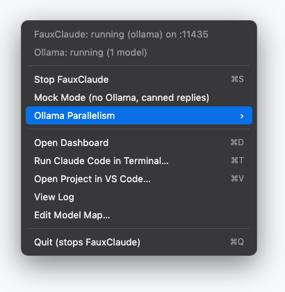
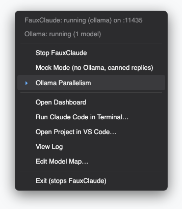
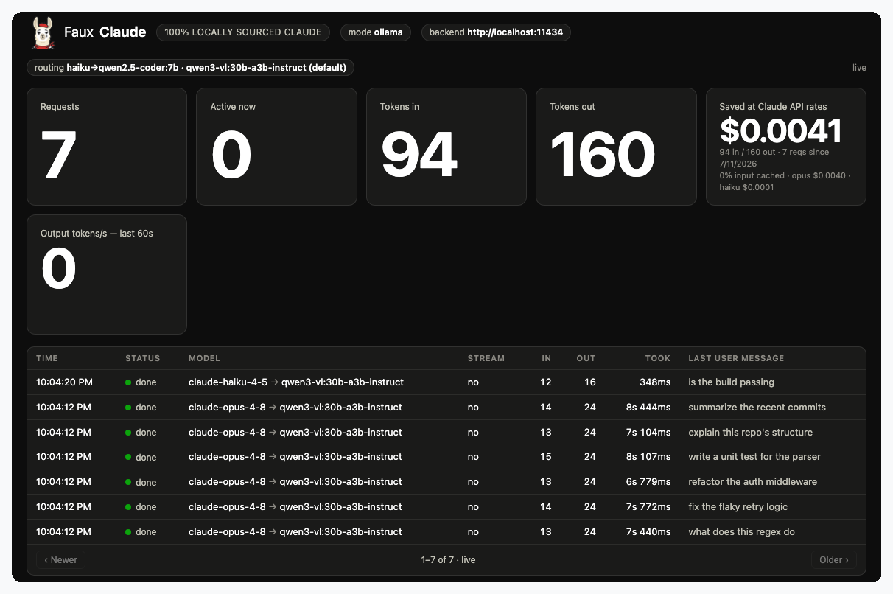

Docs
FauxClaude is a small Node server that pretends to be the Anthropic Messages API in front of a local Ollama model — so Claude Code (or anything else that speaks the Claude API) runs against your own hardware for free. That's the whole app. Everything below is optional convenience on top of it.
What it is
One file, server.mjs, zero dependencies. It listens on
:11435, translates each request into Ollama's
/api/chat format, and translates the reply back into Anthropic's
wire format (including streaming SSE). Point any Claude client at it with
ANTHROPIC_BASE_URL and it can't tell the difference.
Install
Three things, in order.
-
Ollama, as the app — not
ollama servein a terminal. The app installs a background service that survives logout/reboot, so it's always there when FauxClaude needs it.# macOS brew install --cask ollama && open -a Ollama # Windows: install "Ollama for Windows" from ollama.com/download
-
A model — see picking a model below.
ollama pull qwen3-vl:30b-a3b-instruct
-
FauxClaude — either the menu bar / tray app (no terminal needed
day-to-day), or run the shim directly:
git clone https://github.com/garthvh/fauxclaude && cd fauxclaude node server.mjs
Picking a model
Claude Code leans hard on tool calling and long context — a small chat model will flail.
qwen3-vl:30b-a3b-instruct — recommended
Mixture-of-Experts: ~30B total but only ~3B active per token, so it's fast despite the size. Also does vision (paste a screenshot) and has a 256k context window. ~19 GB on disk. Needs a roomy box (64 GB+ RAM).
qwen2.5-coder:7b / :14b
Solid dense coding models, no vision. The 7b (~4.7 GB) is the safe pick on a 32 GB machine; the 14b wants more headroom.
qwen3-coder, devstral
Larger dedicated agentic/tool-calling coders if you have the RAM/VRAM to spare and want maximum coding quality over speed.
3b models, mock mode
qwen2.5-coder:3b / llama3.2:3b for a 16 GB
box, or MOCK=1 for zero-inference load testing.
Route different Claude tiers to different models with MODEL_MAP,
or edit it persistently from either app's Edit Model Map… menu item. A
tier pointed at a model you haven't pulled falls back automatically.
Mac app
FauxClaude.app — a native menu bar app that owns the shim process.
Drag it to /Applications and launch from Spotlight. It bundles
its own copy of the shim, so it's fully self-contained. Needs Node 18+
(brew install node) and the Ollama app running.

| Menu item | What it does |
|---|---|
| Start / Stop FauxClaude | the shim runs only while the app does |
| Mock Mode | canned replies, no Ollama needed — restarts the shim |
| Ollama Parallelism | Interactive (1 slot) ↔ Simulation (4 slots) — persists the setting and restarts Ollama for you |
| Open Dashboard | the live GUI, in your default browser |
| Run Claude Code in Terminal… | pick a project folder; opens Terminal there, wired to the shim |
| Open Project in VS Code… | pick a folder; opens an isolated VS Code instance pointed at the shim — see VS Code |
| View Log | ~/Library/Logs/fauxclaude.log |
| Edit Model Map… | opens ~/.fauxclaude-model-map.json for persistent per-tier routing |
server.mjs / dashboard.html /
the Swift source with mac-app/build-app.sh — then
install it: ditto FauxClaude.app /Applications/FauxClaude.app.
open -a FauxClaude launches the installed copy, so a repo rebuild
alone won't take effect.
Windows app
windows-app/ — the .NET 8 WinForms system tray twin, kept in feature lock-step with the Mac app.
Same menu, same behavior: Mock Mode, Ollama Parallelism, Open Dashboard, Run Claude Code in Terminal…, Open Project in VS Code…, View Log, Edit Model Map…. Needs Node 18+ and Ollama for Windows.

cd windows-app
dotnet publish -c Release -r win-x64 --self-contained false
# exe lands in bin\Release\net8.0-windows\win-x64\publish\
VS Code
The Claude Code extension reads its endpoint from the process environment — not from settings.json.
Which means the only way to point it at the shim is to launch VS Code with
ANTHROPIC_BASE_URL already set. Open Project in VS Code…
does that: it starts a dedicated instance (its own profile, shared
extensions) on the folder you pick.
It also installs a small bundled extension, FauxClaude Status — a 🦙 in the status bar that lights up in windows actually routed to the shim (and warns if the shim is offline). The isolated instance gets a purple status bar and a "🦙 FauxClaude" window title, so it's obvious at a glance.
Terminal / CLI
The claude-local launchers start the shim if needed and drop you into Claude Code.
# macOS / Linux ./claude-local ./claude-local -p "explain this repo" # Windows .\claude-local.ps1 claude-local.cmd -p "explain this repo"
The launcher only sets env vars for its own child process — your normal
claude sessions (real API) are untouched. Logged into
claude.ai already? Don't set a credential env var at all; your login rides
through (the shim ignores auth). Setting one alongside a login just
triggers Claude Code's harmless auth-conflict warning.
Dashboard
Open http://127.0.0.1:11435/ in any browser while the shim is running.
Live over SSE: request counts, tokens in/out, a tokens/sec sparkline, and an all-time "Saved at Claude API rates" estimate — cache-aware, priced per the model the client actually asked for. Below that, a paged table of up to ~2000 recent requests:

- active — streaming or working
- done
- error — with the failure message
- canceled — the client disconnected (e.g. you hit Esc in Claude Code) before it finished
Click any row for the full request/response. The "last user message"
preview strips Claude Code's injected <system-reminder>
boilerplate and interrupt markers, so it shows what was actually typed.
Config reference
All environment variables, all optional.
| Var | Default | Purpose |
|---|---|---|
PORT | 11435 | listen port |
OLLAMA_URL | http://localhost:11434 | your Ollama instance |
OLLAMA_MODEL | first in /api/tags | default backing model |
MODEL_MAP | haiku→7b | JSON, per-Claude-tier routing |
MODEL_MAP_FILE | — | path to a persistent, editable JSON routing file |
NUM_CTX | 131072 | Ollama context window (clamped to the model's trained max) |
NUM_PREDICT_MAX | 16384 | hard cap on generated tokens (runaway guard) |
NUM_BATCH | 2048 | prompt-eval (prefill) batch size |
KEEP_ALIVE | -1 (forever) | how long Ollama keeps the model loaded |
MAX_ACTIVITY | 2000 | requests retained for the dashboard |
MOCK | off | 1 = canned replies, no Ollama |
MOCK_DELAY_MS / MOCK_TOKENS | 15 / 60 | mock pacing / response length |
LOG | off | 1 = request logging |
Endpoints
| Endpoint | Notes |
|---|---|
POST /v1/messages | streaming + non-streaming; tools, images, thinking blocks passed through |
POST /v1/messages/count_tokens | chars/4 estimate |
GET /v1/models, /v1/models/:id | advertises current Claude model ids |
GET / | the live dashboard |
GET /events | the dashboard's SSE feed |
GET /health | mode, Ollama url, default model, model map |
Speed & RAM
Generation is memory-bandwidth bound — model size sets the pace, not the frontend.
Keep OLLAMA_NUM_PARALLEL=1 for interactive coding. Extra
parallel slots split Ollama's KV cache, so consecutive turns land on empty
slots and re-prefill the whole conversation instead of reusing the cached
prefix — a huge latency difference on Claude Code's big prompts. Raise it
only for load-testing (the app's Ollama Parallelism toggle does this
for you).
| Box RAM | Setup |
|---|---|
| ≥ 64 GB | qwen3-vl:30b-a3b-instruct as the single default, or two models resident with OLLAMA_NUM_PARALLEL=4 for sims |
| 32 GB | only qwen2.5-coder:7b pulled; keep NUM_CTX ≤ 32768 |
| 16 GB | qwen2.5-coder:3b / llama3.2:3b, NUM_CTX=16384, or mock mode |
Known gaps
Intentional, not bugs.
- Input token counts are estimates — Ollama has no tokenizer endpoint.
- No real prompt caching / batches / files API. The dashboard's savings
estimate models caching; the API itself always reports
cache_read_input_tokens: 0. - Server tools (
web_searchetc.) in thetoolsarray are silently dropped. - Tool-call quality depends entirely on the Ollama model — pick one with tool support.